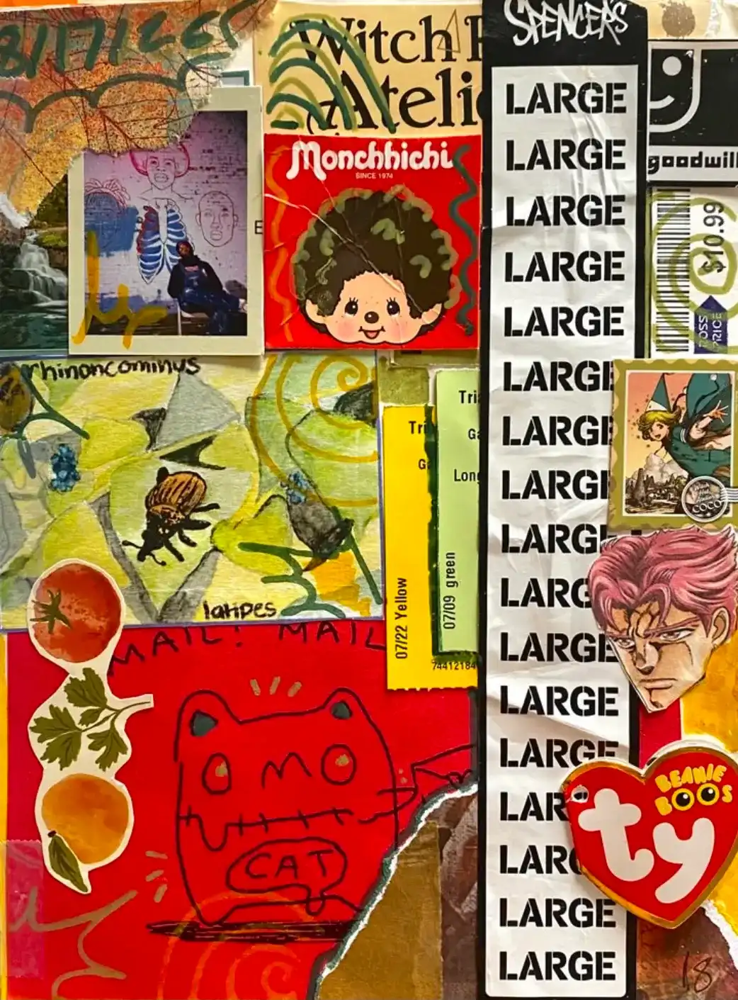
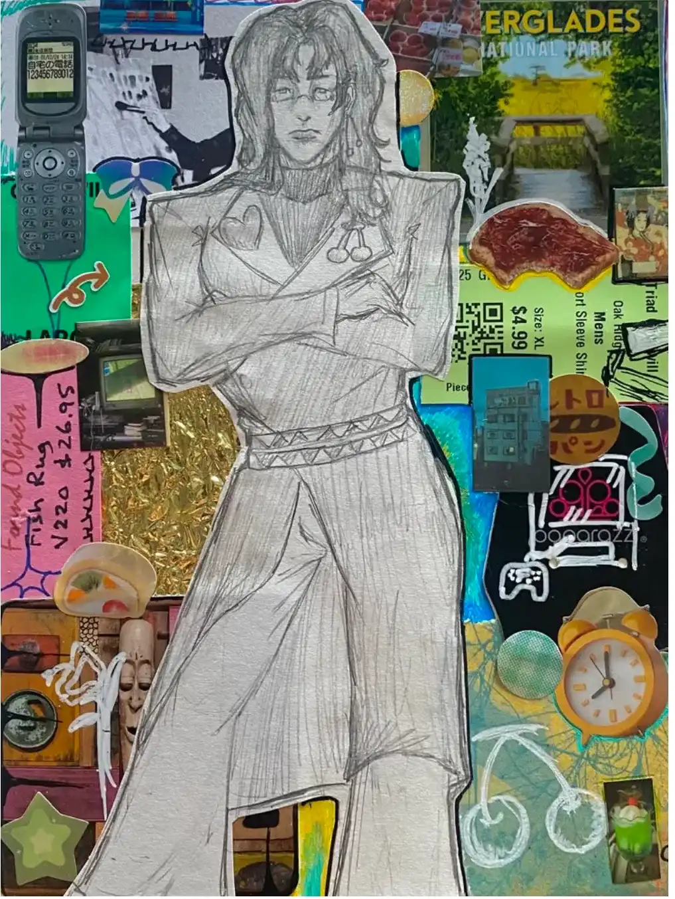
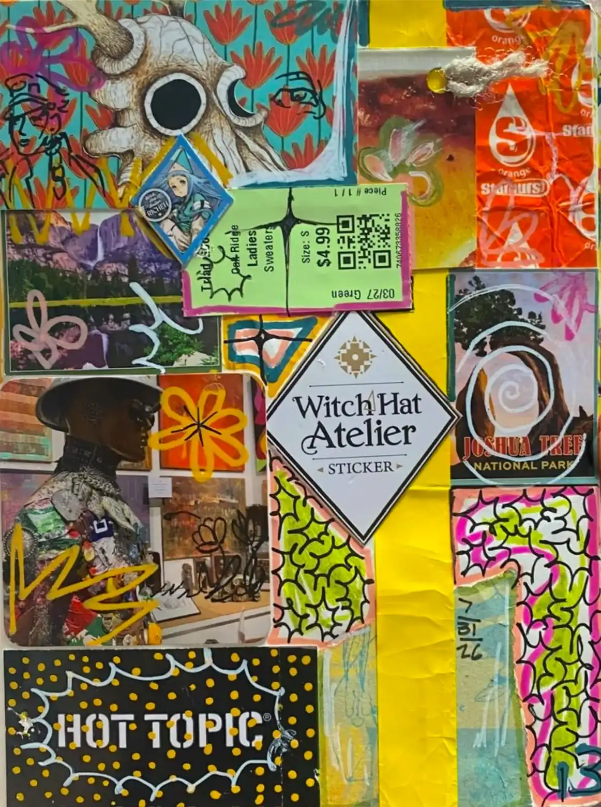
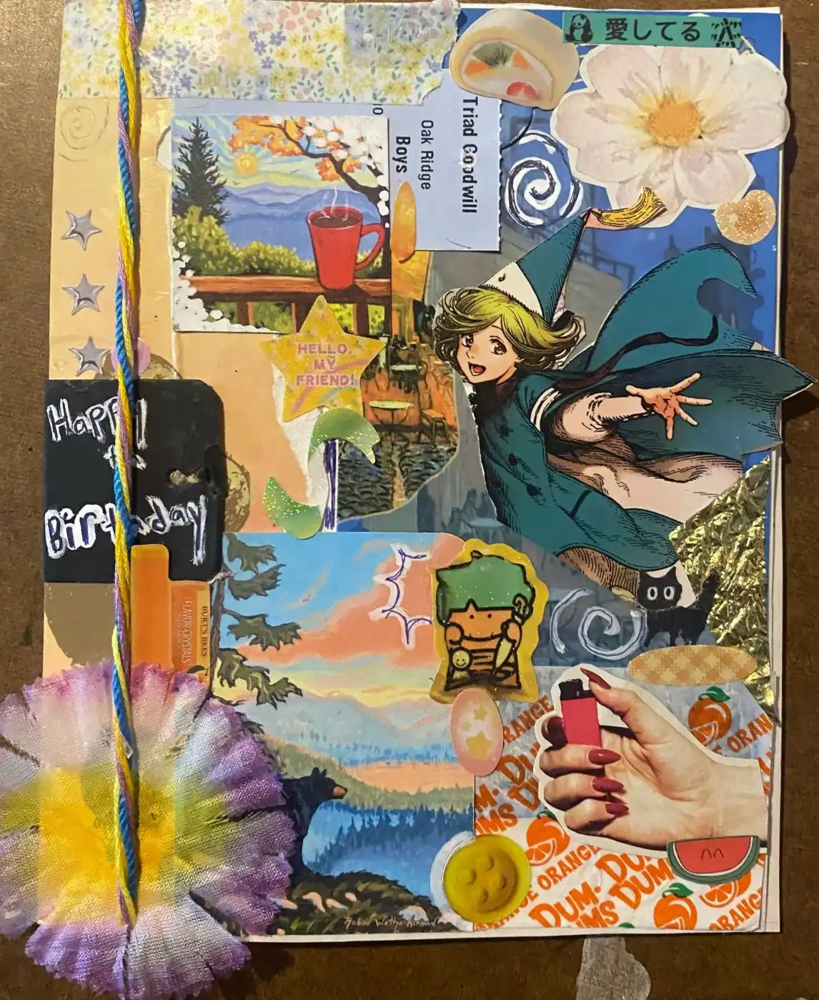
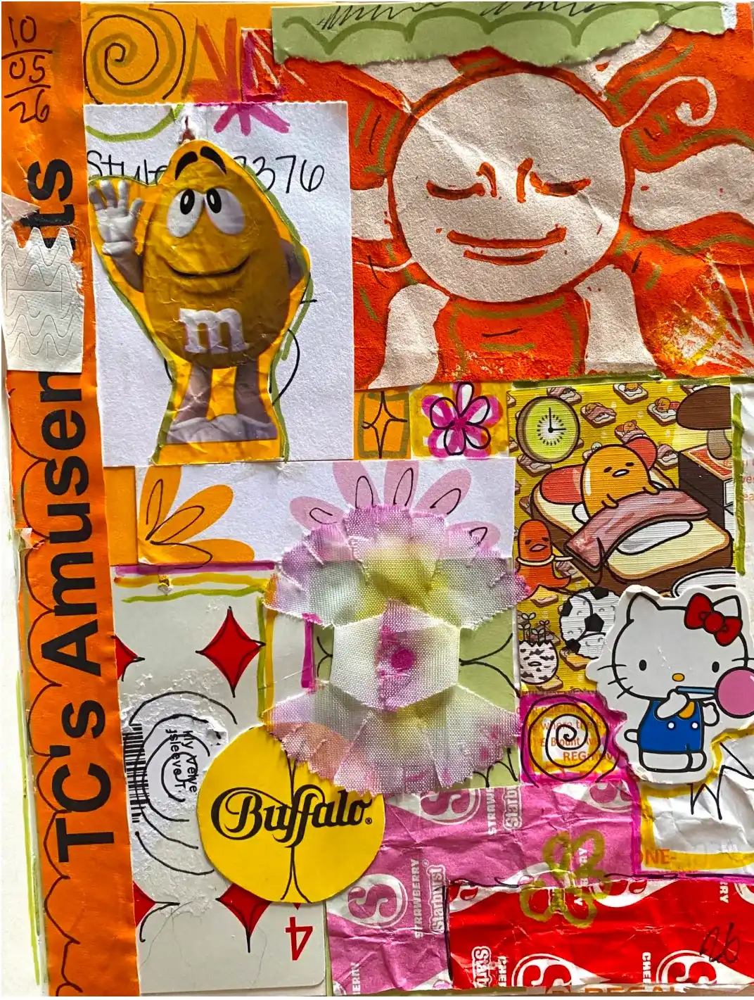

Weevil drawing in middle left was drawn by a friend of mine! She made it for an informative pamphlet for a weevil themed event, and I was able to get my hands on one and use the cover.

My first kakyoin part four design^^


